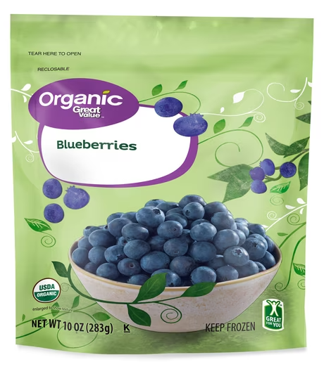
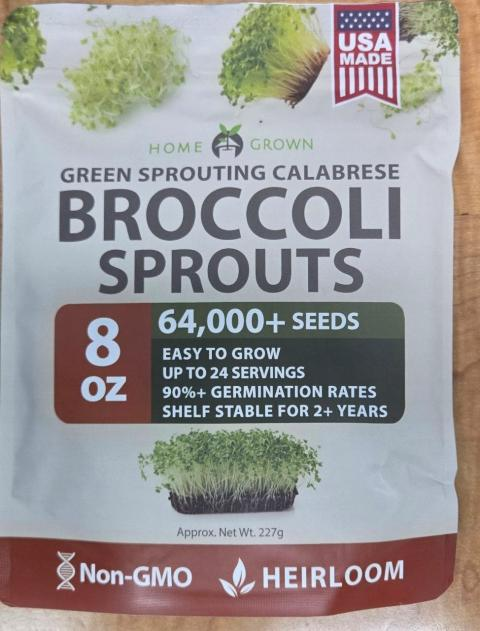
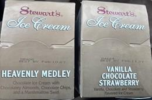
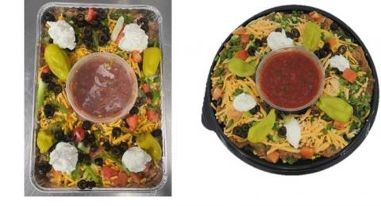

| Latest · All active · Archive · Subscribe → | 🛡️ FOOD RECALL DIGEST Frozen organic berries at Walmart & Trader Joe’s recalled for E. coli Fri, Oct 2, 2026 · new since Oct 1 | 12 NEW RECALLS | | 2 HIGH RISK | | 6 STILL ACTIVE |
| | ✓ Audited: every fact checked against FDA and USDA FSIS pages and USDA store-list PDFs on Oct 2, 2026. | | New this issue: seven older USDA recalls (June–September) that are still open appear here for the first time, each with every store USDA has named. |
| | Expand all · Collapse all | | | ▸In this issue12 new recalls, most serious first  | HIGH RISK Great Value & Trader Joe’s frozen organic berries E. coli O145 · Walmart & Trader Joe’s · Don’t eat |  | HIGH RISK HOME GROWN broccoli sprouting seeds (Amazon) Salmonella · sold on Amazon · Don’t use |  | MEDIUM Stewart’s Shops half-gallon ice cream Metal piece found · Stewart’s Shops NY, VT, NH · Return |  | MEDIUM WinCo Foods salsa bean dip trays Made with recalled Mezzetta peperoncini (possible pest) · WinCo, 8 states | | MEDIUM Yupi “Golpe con Todo” BBQ mixed chips Pork cracklings from Colombia (not eligible for US import) · 8 states · Don’t eat | | MEDIUM De Todito mixed chips with chicharrón Pork cracklings from Colombia (not eligible) · 20 named stores · Don’t eat | | MEDIUM Gangothri goat & chicken pickles Not USDA-inspected · 44 named stores + online · Don’t eat | | MEDIUM Al Kabeer breaded swai fish Fish from a non-eligible country (UAE) · 143 named stores · Don’t eat | | MEDIUM Argentine raw beef cuts (Corte Argentino) Imported without USDA reinspection · 72 named FL stores | | MEDIUM Royale & TOP VALU uncured bacon Imported without USDA reinspection · 126 stores, almost all Grocery Outlet | | MEDIUM tasty KITCHEN chicken noodle soup (food banks) Imported without USDA reinspection · 47 Oklahoma food banks/pantries | | ALLERGEN Power Plate Meals meatloaf Undeclared soy · MN, ND, SD |
| | |
| | | ▸Recall details ▸HIGH RISK · FDA · Oct 2 · expands Jul 3 & Sep 3 recalls · Great Value & Trader Joe’s frozen organic berries| Great Value & Trader Joe’s Frozen Organic Blueberries and Berry Blends | | | ⚠️ | PROBLEM Possible E. coli O145:H28 (a Shiga toxin-producing E. coli). It can cause severe stomach cramps, bloody diarrhea and vomiting, and sometimes kidney failure (HUS), especially in young children, older adults and people with weak immune systems. Recalled as a precaution after traceback linked to the frozen blueberries in the first (Jul 3) recall. | | 🔍 | LOOK FOR | Great Value Organic Triple Berry Blend, 10 oz (strawberries, blackberries, blueberries) · UPC 7874211226 · lot 6 031 01 (best if used by Jan 31, 2028) and lot 6 041 01 (Feb 10, 2028) · lot code on the front of the bag |
| Great Value Organic Blueberries, 10 oz · UPC 7874211213 · lots 6 019 01, 6 040 01 and 6 163 01 (best if used by Jan 19, 2028; Feb 9, 2028; Jun 12, 2028) · lot code on the front of the bag |
| Trader Joe’s Organic Mixed Berry Blend, 12 oz · UPC 00977654 · lot 6 051 01 · best before Feb 20, 2028 · lot code on the back of the bag |
| | 🩺 | ILLNESSES None mentioned in this expansion notice. The earlier outbreak tied to this supplier’s frozen blueberries made 17 people sick in FL and GA (6 hospitalized, no deaths); CDC declared that outbreak over on Sep 21, 2026. | | 📍 | WHERE SOLD Select Walmart stores (Great Value) in AL, AR, CT, FL, GA, IA, IL, IN, KS, KY, LA, MI, MN, MO, MS, NC, ND, NE, NJ, NY, OH, OK, PA, SC, SD, TN, TX, VA, WI, WV and Puerto Rico. Select Trader Joe’s stores in AL, AR, CO, DE, FL, GA, IL, IN, IA, KS, KY, LA, MD, MI, MN, MO, NE, NC, OH, OK, PA, SC, TN, TX, VA, WI and DC. | | ➜ Check your freezer. Don’t eat it — throw it away or return it to Walmart or Trader Joe’s for a full refund. Questions: Info.foodsafety@comfrut.com or 336‑899‑5612 (Mon–Fri 8 AM–6 PM ET). |
| |
|
| | | ▸HIGH RISK · FDA · Oct 2 · HOME GROWN broccoli sprouting seeds (Amazon)| HOME GROWN Green Sprouting Calabrese Broccoli Seeds, 8 oz, Heirloom | | | ⚠️ | PROBLEM Possible Salmonella. FDA testing found Salmonella in a sample of the broccoli seed (supplier lot W4105). The company says the seeds were used by a sprout grower whose sprouts were part of an FDA multistate outbreak investigation (the notice does not name the outbreak). | | 🔍 | LOOK FOR | HOME GROWN Green Sprouting Calabrese Broccoli Seeds, 8 oz, Heirloom, in a cream-colored pouch |
| Production lot code AUG172026 embossed on the top seal |
| Bought on Amazon.com Aug 20 – Sep 18, 2026 |
| | 🩺 | ILLNESSES None reported from this product to date. | | 📍 | WHERE SOLD Amazon.com, nationwide (Aug 20 – Sep 18, 2026). | | ➜ Don’t sprout or eat them — throw them away and contact Amazon for a refund. Questions: EAK Distribution, 541‑306‑4278 (Mon–Fri 8 AM–5 PM PT). |
| |
|
| | | ▸MEDIUM · FDA · Oct 2 · Stewart’s Shops half-gallon ice cream| Stewart’s Shops Heavenly Medley & Vanilla-Chocolate-Strawberry Ice Cream | | | ⚠️ | PROBLEM Possible metal. A customer found a metal object in a half-gallon carton. | | 🔍 | LOOK FOR | Stewart’s Shops Heavenly Medley, one half gallon (1.89 L) · best by Feb.10.27 · UPC 0 82086 44371 1 |
| Stewart’s Shops Vanilla-Chocolate-Strawberry, one half gallon (1.89 L) · best by Feb.11.27 · UPC 0 82086 44377 3 |
| Sold Jul 17 – Oct 2, 2026 |
| | 🩺 | ILLNESSES No injuries or illnesses reported. | | 📍 | WHERE SOLD All Stewart’s Shops locations in New York, Vermont and New Hampshire. | | ➜ Don’t eat it. Return it to any Stewart’s Shops for a full refund. Questions: Robin Cooper, 518‑248‑0455, rcooper@stewartsshops.com. |
| |
|
| | | ▸MEDIUM · FDA · Announced Oct 1, posted Oct 2 · WinCo Foods salsa bean dip trays| WinCo Foods Salsa Bean Dip Trays | | | ⚠️ | PROBLEM May contain the Mezzetta Golden Greek Peperoncini lot recalled Sep 26 for a possible pest in the jar. WinCo says it found no pests and had no complaints. | | 🔍 | LOOK FOR | WinCo Foods Salsa Bean Dip Tray Express, 54 oz · UPC 2‑67173‑##### |
| WinCo Foods Salsa Bean Dip Tray, 16 Inch Catering Tray, 104 oz (special order only) · UPC 2‑67240‑##### |
| Best If Used By Aug 14 – Sep 25, 2026 |
| | 🩺 | ILLNESSES None reported. | | 📍 | WHERE SOLD WinCo Foods stores in AZ, CA, ID, MT, NV, OR, UT and WA. WinCo says the trays are short-shelf-life deli items not expected to still be in homes, and all possibly affected product was removed from stores. | | ➜ Don’t eat any leftover tray with these dates. Questions: WinCo Customer Service, 1‑800‑824‑1706. |
| |
|
| | | ▸MEDIUM · USDA · Oct 2 · 189 lbs · Yupi “Golpe con Todo” BBQ mixed chips| Yupi Golpe con Todo Sabor BBQ Mixed Chips with Chicharrón (Inexport Logistics) | | ⚠️ | PROBLEM Contains chicharrón (pork cracklings) made in Colombia, which is not eligible to export meat to the US. FSIS found it in a store during a recall effectiveness check. | | 🔍 | LOOK FOR | 60‑g foil bags of “YUPI GOLPE CON TODO SABOR BBQ” mixed chips with “Clásicas,” “PLATANOS,” and “Chicharrón Fred.” |
| Any product date; no import marks on the label |
| | 🩺 | ILLNESSES None confirmed. | | 📍 | WHERE SOLD Distributors and retail stores in AZ, CA, CO, FL, IL, KY, MN and TX. USDA hasn’t posted a store list yet; it will appear here when it does. | | ➜ Don’t eat. Throw away or return to the store. Questions: Mauricio Caro, Inexport Logistics, (786) 670‑4750, sales@inexportlogistics.com. |
| |
|
| | | ▸MEDIUM · USDA · Sep 9, updated Sep 17 · 264 lbs · first time in this digest · De Todito mixed chips with chicharrón| De Todito Mixed Chips with Chicharrón (El Eden Import) | | ⚠️ | PROBLEM Contains chicharrón (pork cracklings) made in Colombia, which is not eligible to export meat to the US. Found after a consumer complaint. | | 🔍 | LOOK FOR | 45‑g foil bags of “De Todito NATURAL” mixed chips with “CHICHARRÓN AMERICANO JACKS,” “Margarita,” and “NATU CHIPS.” |
| 45‑g foil bags of “De Todito BBQ” mixed chips with “CHICHARRÓN AMERICANO JACKS,” “Margarita,” and “NatuChips.” |
| No import marks on the label |
| | 🩺 | ILLNESSES None confirmed. | | 📍 | WHERE SOLD 20 stores in MA, NJ, NY and UT (USDA list as of Sep 29). USDA says more states may be identified. ↓ Full store list at the end of this email | | ➜ Don’t eat. Throw away or return to the store. Questions: Humberto Gallego, El Eden, Hhgl1968@gmail.com. |
| |
|
| | | ▸MEDIUM · USDA · Aug 17 · 1,626 lbs · first time in this digest · Gangothri goat & chicken pickles| Gangothri Goat & Chicken Pickles (Indus Foods) | | ⚠️ | PROBLEM Ready-to-eat meat pickles made without federal inspection (no USDA mark of inspection). | | 🔍 | LOOK FOR | 8‑oz glass jars of “Gangothri Goat Pickle” |
| 8‑oz glass jars of “Gangothri Gongura Goat Pickle” |
| 8‑oz glass jars of “Gangothri Chicken Pickle” |
| 8‑oz glass jars of “Gangothri Gongura Chicken Pickle” |
| Produced Jan 28, 2025 – May 6, 2026 (two-year shelf life) |
| | 🩺 | ILLNESSES None confirmed. | | 📍 | WHERE SOLD 44 stores in 19 states (USDA list as of Aug 25), mostly Indian/South Asian groceries. Also restaurants, distributors and online sales nationwide (not named). ↓ Full store list at the end of this email | | ➜ Don’t eat. Throw away or return to the store. Questions: Jyothi Yerramreddy, 512‑284‑7790, Gangothripickles@gmail.com. |
| |
|
| | | ▸MEDIUM · USDA · Aug 7 · 5,084 lbs · first time in this digest · Al Kabeer breaded swai fish| Al Kabeer Breaded Swai Fish Fillets & Sticks (Shan Distribution) | | ⚠️ | PROBLEM Swai (Siluriformes) fish produced in the United Arab Emirates, which is not eligible to export this fish to the US. No establishment number or USDA mark. | | 🔍 | LOOK FOR | 13.75‑oz boxes of Al Kabeer spicy “Zing Fish Fillets Breaded Partially Cooked Swai Fish Fillets” |
| 10.58‑oz boxes of Al Kabeer “Fish Sticks Breaded Swai Fish” |
| 330‑g boxes of Al Kabeer “Breaded Fish Fillets” |
| Produced December 2025; use-before dates in June 2027 |
| | 🩺 | ILLNESSES None confirmed. | | 📍 | WHERE SOLD 143 stores in IL, IN, IA, MI, MN, MO, OH and WI (USDA list as of Aug 19). ↓ Full store list at the end of this email | | ➜ Don’t eat. Throw away or return to the store. Questions: Shaheen James, Shan Distribution, 630‑480‑0616, shaheen.sdn@gmail.com. |
| |
|
| | | ▸MEDIUM · USDA · Aug 7 · 29,628 lbs · first time in this digest · Argentine raw beef cuts (Corte Argentino)| Frigorífico Gorina Raw Beef Cuts from Argentina (Corte Argentino) | | ⚠️ | PROBLEM Raw beef imported from Argentina without USDA import reinspection. | | 🔍 | LOOK FOR | Various-weight boxes of “FrigorIfico Gorina SAIC” boneless beef “Top Sirloin Butt” (“Cuadril Sin Tapa”) |
| … “Topside Cap Off” (“Nalga AD S/Tapa”) |
| … “Flat” (“Carnaza Cuadrada”) |
| … “Knuckle” (“Bola de Lomo”) |
| Argentine establishment number “EST. N° OF. 2025”; shipping mark “26644‑AA” |
| Produced May 15–20, 2026; use or freeze-by Sep 15–20, 2026 |
| | 🩺 | ILLNESSES None confirmed. | | 📍 | WHERE SOLD 72 stores in Florida (USDA list as of Aug 24). Sold to distributors and retailers in FL and TX. ↓ Full store list at the end of this email | | ➜ If you froze any of this beef, don’t eat it. Throw away or return to the store. Questions: Eial Kaplun, 786‑350‑5805, info@corteargentinoinc.com. |
| |
|
| | | ▸MEDIUM · USDA · Jul 24 · 12,036 lbs · first time in this digest · Royale & TOP VALU uncured bacon| Royale & TOP VALU Uncured Bacon from Canada (Maple Leaf Foods) | | ⚠️ | PROBLEM Raw (not ready-to-eat) smoked bacon imported from Canada without USDA import reinspection. | | 🔍 | LOOK FOR | 12‑oz “Royale Natural Applewood Smoked ALL NATURAL Uncured Bacon Product of Canada” · sell by SEP 01 2026 or SEP 07 2026 |
| 12‑oz “TOP VALU Uncured Hardwood Smoked Bacon PRODUCT OF CANADA” · sell by SEP 01, SEP 02, SEP 04, SEP 05 or SEP 07 2026 |
| Canadian establishment “EST. 1” on the side of the package |
| | 🩺 | ILLNESSES None confirmed. | | 📍 | WHERE SOLD 126 stores in ID, OR and WA, almost all Grocery Outlet (USDA list as of Jul 27). ↓ Full store list at the end of this email | | ➜ If any is still in your freezer, don’t eat it. Throw away or return. Questions: Adam Emery, Maple Leaf Foods, 416‑518‑5131. |
| |
|
| | | ▸MEDIUM · USDA · Jul 23 · 4,300 lbs · first time in this digest · tasty KITCHEN chicken noodle soup (food banks)| tasty KITCHEN Chicken Noodle Condensed Soup (BCI Foods) | | ⚠️ | PROBLEM Canned soup imported from Canada without USDA import reinspection. | | 🔍 | LOOK FOR | 10.5‑oz can of “tasty KITCHEN Chicken Noodle Condensed Soup PRODUCT OF CANADA” |
| Best by “2028 FE 04”; lot code “5 9 2 26 035” |
| Canadian establishment “EST. 142” on the can |
| | 🩺 | ILLNESSES None confirmed. | | 📍 | WHERE SOLD 47 food bank and food pantry locations in Oklahoma (USDA list as of Aug 20). ↓ Full store list at the end of this email | | ➜ Don’t eat. Throw away or return. Questions: Marie-Lou Corbin, BCI Foods, 514‑218‑7143. |
| |
|
| | | ▸ALLERGEN · USDA · Jun 18 · 5,795 lbs · first time in this digest · Power Plate Meals meatloaf| Power Plate Meals Meatloaf with Garlic Mashed Potatoes | | ⚠️ | PROBLEM Contains soy, which is not listed on the label. | | 🔍 | LOOK FOR | 13.3‑oz vacuum-sealed plastic tray “POWER PLATE MEALS MEATLOAF WITH GARLIC MASHED POTATOES” |
| USE BY dates 6/25/26 through 6/10/27 |
| Establishment number “217SEND” inside the USDA mark |
| | 🩺 | ILLNESSES No reactions reported. | | 📍 | WHERE SOLD Shipped to distributors in Minnesota, North Dakota and South Dakota. USDA has not posted a store list. | | ➜ If you’re allergic to soy, don’t eat it. Throw away or return. Questions: hungry2help@powerplatemeals.com. |
| |
|
| | |
| | | ▸Updates | ↻ Jalapeño Salmonella outbreak (Coast Citrus, Sinaloa, Mexico): was 431 sick in 32 states, 57 hospitalized (Aug 19) → now 488 sick in 34 states, 65 hospitalized, no deaths. CDC declared the outbreak over and FDA ended its investigation (Oct 2). Some recalled products made with these jalapeños have long shelf lives. |
| | | ▸Still activeOngoing recalls and outbreaks with illness risk | | Jalapeños from Sinaloa, Mexico (Coast Citrus) Salmonella Javiana · 488 sick, 34 states, 65 hospitalized, no deaths — CDC declared the outbreak over (Oct 2) | | | | Freshness Guaranteed (Walmart) |
| | | | |
➜ Some recalled products made with these jalapeños have long shelf lives — check your home and throw them away |
| | | Broccoli sprouts — Evergreen Fresh Sprouts (ID) Salmonella · 32 sick in ID, MN, MT, OR, UT, WA; 3 hospitalized (Sep 24) Expiration dates 9/7, 9/9, 9/11, 9/14, 9/16. Sold in ID, MT and WA groceries and restaurants. ➜ Throw away |
| | | Alfalfa sprouts & sprout mixes E. coli + Salmonella · 76 sick, 16 states, 6 hospitalized (Oct 1) ➜ Throw away |
| | | Guanciale pork jowl — Prime Line / Ferrarini Listeria · no illnesses reported Lot 263311US, use by 05.16.27. 9 named stores in FL, NJ and NY — see Store lists below. ➜ Throw away |
| | | Graziers raw milk cheese E. coli O26 · 13 sick, 9 states, 8 hospitalized, 3 with kidney failure (CDC, Sep 25) ➜ Do not eat |
| | | Outbreaks — source not found yet 7 open investigations · Listeria (44, 11, 11 cases) · E. coli O157:H7 (38) · Salmonella Newport (116), Oranienburg (99), I 4,[5],12:i:- (43) ➜ Watch for updates |
| 358 FDA + 12 USDA recalls still open, however old, with 514 stores named by USDA. |
| | | | ▸Store listsTap an address for directions ▸De Todito mixed chips — El Eden Import20 stores in 4 states · USDA retail list 021‑2026 as of Sep 29, 2026 · tap to show MASSACHUSETTS · 1 | NEW JERSEY · 15 New Jersey Bergenline Supermarket
8107 Bergenline Ave, North Bergen | Central Fresh Supermarket
223 E Main St, Bound Brook | Citi Grocer
117 Spring St, Elizabeth | Eagle Supermarket
1102 Elizabeth Ave, Elizabeth | Food Fair La Gran Marketa
946 Market St, Paterson | International Supermarket
128 Ocean Ave, Lakewood | Seabra Foods – Jt
1000 So. Elmora Ave, Elizabeth | Super Exito
74 W Palisades Ave, Englewood | Super Fresh
1303 N. Broad St, Hillside | Supremo Food Market
249 East Front St, Plainfield | Tropical
446 North Ave, Dunellen | Tropical Supermarket
959 Livingston Ave, North Brunswick | Twin City
1016 Sherman Ave, Elizabeth | Universal Supermarket
2325 Elizabeth Ave, Rahway | World Supermarket
314 Sumerset St, North Plainfield | |
| NEW YORK · 1 | UTAH · 3 | | |
| ▸Gangothri goat & chicken pickles — Indus Foods44 stores in 19 states · USDA retail list 017‑2026 as of Aug 25, 2026 · tap to show ALABAMA · 2 | CALIFORNIA · 1 | COLORADO · 2 | FLORIDA · 4 | GEORGIA · 6 | ILLINOIS · 2 | KENTUCKY · 1 | MICHIGAN · 3 | MISSISSIPPI · 1 | NEBRASKA · 1 | NEW JERSEY · 2 | NORTH CAROLINA · 6 | OHIO · 1 | SOUTH CAROLINA · 2 | TENNESSEE · 2 | TEXAS · 3 | UTAH · 1 | VIRGINIA · 1 | WISCONSIN · 3 | | |
| ▸Al Kabeer breaded swai fish — Shan Distribution143 stores in 8 states · USDA retail list 014‑2026 as of Aug 19, 2026 · tap to show ILLINOIS · 73 Illinois A J Store Llc
19 N Addison Rd, Addison | Ahmed Meat & Grocery
6003 Dempster St., Morton Grove | Al Amin Grocery
6403 N Artesian Ave, Chicago | Almadina International Foods
2700 W Lawrence Ave., Springfield | Ambica Food
400 W Army Trail Road Unit #102, Bloomingdale | Angelo Caputo's Fresh Markets
520 North Ave., Carol Stream | Arax Foods
9017 N. Milwaukee Ave, Niles | Az Halal Meat & Grocery
1213 N Gary Ave., Carol Stream | Baladi Fresh Market
601 W North Ave, Villa Park | Beesan Bakery & Fresh Meat
8339 S Harlem Ave, Bridgeview | Betein Market
3524 W. Willow Knolls Rd, Peoria | Bismallah Market
475 W Boughton Rd, Bolingbrook | Bloom Bazaar
503 N. Prosepect Rd. #203, Bloomington | Bombay Market
1726 W Bradley Avenue, Champaign | Bombay Mart
2707 W. Algonquin Rd, Algonquin | Eastern Halal Food
1113 East Ave, Streamwood | Farm City Meat
2255‑57 W Devon Ave, Chicago | Farmer's Best Inc
413 N. Milwaukee Ave, Vernon Hills | Fresh Farm Hq:Fresh Farm Devon
2626 W Devon Ave, Chicago | Fresh Farms Golf Road
8203 W Golf Rd., Niles | Fresh Zabiha Supermarket
2650 W Devon, Chicago | Geetha Foods Inc
4035 Main St, Skokie | Great Halal
6601 S Cass Ave Unit A, Westmont | Habeeb Meat Shop Inc.
2240 W Devon Ave, Chicago | Halal Express Mart 1 Llc
6065 Dempster St, Morton Grove | Halal Foods America
5866 East State St, Rockford | Halal Market
512 W.boughton Rd, Bolingbrook | Harvestime Foods
2632 West Lawrence Ave, Chicago | Hot Masala
2265 Randall Road, Carpenterville | International Fresh Market
856 S Route 59, Naperville | Iqra Grocery
212 Roosevelt Rd., Villa Park | Makkah Grocers
1652 S. Ardmore Ave, Villa Park | Marhaba Zabiha Halal Foods
1568 Ogden Ave, Naperville | Mediterranean Oasis
357 E. Bailey Road, Naperville | Mediterranian Market
612 E Roosevelt Rd, Lombard | Middle Eastern Market
3952 N. Harlem Avenue, Chicago | Namaste Plaza Il
3228 Ave. Of The Cities, Moline | Nayab Mart Devon
2449 W Devon Ave, Chicago | New Maharaja Foods Inc
9060 W. Golf Road, Niles | New Shamiana Halal Foods
2233 W Schaumburg Rd, Schaumburg | Oasis Bakery
7758 W. 95th Street, Hickory Hills | Olivo Supermarket
2514 S Alpine Rd, Rockford | Orland Market & Bakery
9005 W. 151st St,, Orland Park | Owais Foods
9372 W Ballard Rd, Des Plaines | Palms Market
9161 N Milwaukee, Niles | Par Birdie
2234 W Devon Ave, Chicago | Pardesi Grocers
1300 S Main Street, Lombard | Patel Brothers
9555 N Milwaukee Ave, Niles | Patel Brothers
1568 Ogden Ave, Naperville | Patel Brothers, New
830 West Golf Road, Schaumburg | Perdesi Grocers
1545 Bloomingdale Rd, Glendale Heights | Pita Inn Market
3924 Dempster Street, Skokie | Raawi's General Store
519 East Main Street, Carbondale | Reyan's Halal Market
5158 Main St, Skokie | Sahar International Supermarket
4851‑57 N Kedzie Ave, Chicago | Shami Meat Market
9001 N Miwaukee Ave, Niles | Shan Food Resaturant
5060-a North Sheridan Rd., Chicago | Shibam Market
7201 W 84th St, Bridgeview | Shop & Save Market
8847 S. Harlem Ave, Bridgeview | Sindbad
4915 Dempster Street, Skokie | Sira Market
6419 W 87th St, Oaklawn | Socotra Halal Market
10327 Central Ave, Oaklawn | Souq Fresh Market
523 E Roosevelt Rd, Lombard | Sundarban's Fish Bazaar
2200 W Devon Avenue, Chicago | Swagat Food & Grocery
6926 N. University St, Peoria | Swagat Foods
5240 W 159th Street, Oak Forest | Swagat Indian Grocery
1500 N Elmhurst Road, Mount Prospect | Tulsi Grocers
873 E Schaumburg Road, Schaumburg | United Grocers
401 N. Riverside Dr. #21, Gurnee | Valley Of Jordan
1009 E 53rd St, Chicago | World Fresh Market
2434 W Devon Ave, Chicago | Zabiha Meat Market
2907 W Devon Ave, Chicago | Zam Zam Meat Mart
7207 Olde Salem Cir., Hanover Park | |
| INDIANA · 15 Indiana Albasha Llc
11321 Village Squre Ln, Fisher | Almadenah Halal Meat Market
1010 W Coliseum Blvd, Fort Wayne | Apna Bazaar
7233 Fishers Landing Dr,, Fishers | Apna Bazaar
6269 W 38th. St, Indianapolis | Arroz Llc
9149 Lima Rd, Fort Wayne | Chingitti Halal Market
711 E Thompson Rd Ste J, Indianapolis | Desi Bazaar
916 E. Main Street #118, Greenwood | Grocery Hub Inc.
1435 W 86th St, Indianapolis | Halal Grocery Llc
2326 Hobson Road, Fort Wayne | Halal Supermarket
4861 W 38th St., Indianapolis | Macca Market
1205 South High School Road, Indianapolis | Milan Grocery
615 West Edison Rd, Mishawaka | Saraga International Grocery North
8448 Center Run Dr, Indianapolis | Shams Halal Market Inc
5510 Lafayette Rd Ste 100, Indianapolis | Swagat Indian Market
105 N. Greenriver Rd., Evansville | |
| IOWA · 11 Afghan Global Market
20 Miller Ave,, Cedar Rapids | Afghan Supermarket
8801 University Ave, Clive | Al Salam International Foods
787 Mormon Trek Blvd, Iowa City | Dukan Market
411 2nd St, Unit B, Coralville | Enlighten Grocery Llc
6840 Ep True Pkwy Suite 109, West Des Moines | Global Mart
89 2nd Street Unit 7, Coralville | Halal Food
1806 Boyrum St, Iowa City | Hilal Groceries
1163 25th St, Des Moines | India Mart
2315 Cumberland Square Dr, Betterdore | Masala Market
913 W 23rd St, Cedar Falls | Vytyl
365 Edgewood Rd Nw,, Cedar Rapids | |
| MICHIGAN · 8 | MINNESOTA · 13 Minnesota Annapurna Foods Llc
15755 61st. Ave. N, Plymouth | Halal Groceries,
13000 Aldrich Ave S,, Burnsville | Hilltop Grocery & Meat Market
Hilltop Grocery & Meat Market, Minneapolis | Holy Land
2513 Central Ave. Ne, Minneapolis | India Bazaar
4130 Blackhawk Rd., Eagan | India Spice House
8445 Joiner Way, Eden Prairie | Little India Grocers
1835 Central Ave Ne, Minneapolis | Mantra Bazaar
14809 Granada Ave, Apple Valley | Mazedar Grill
Desi Foods, Eagan | Pangea World Market
8500 Springbrook Dr. Nw, Coon Rapid | Peace Market
923 45th Ave Ne, Hilltop | Tbs Mart
7836 Portland Avenue, Bloomington | World Food Halal Market
6626 Penn Ave. S., Richfield | |
| MISSOURI · 3 | OHIO · 9 Ohio Bakaro International Grocery
2600 E Dublin Granville Rd, Columbus | Casablanca Mediterranean Food
7743 Tylersville Road, West Chester | Desi Plaza
9405 Cincinnati Columbus Rd, West Chester Township | Halal Foods
818 Reading Rd, Mason | India Bazar
4870 Union Centre Pavillion, West Chester Township | International Plaza
3120 Olentangy River Rd, Columbus | Istanbul Market
5221 Bethel Center Mall, Columbus | Patel Brothers ,
11985 Lebanon Road, Sharonville | Sahana Foods Inc.
9734 Diamond Ridge Circle, Canal Fulton | |
| WISCONSIN · 11 Wisconsin Al Yousef -2755 Llc
2755 W Ramsey Ave, Greenfield | Amana Halal Meat Llc
Garden Of Eden, Milwaukee | Amanah Market
1301 W Edgerton Avenue, Milwaukee | Best Food Store
3405 S. 13th Street, Milwaukee | Chopra Grocers
1575 N Casaloma Dr, Appleton | Jerusalam Market
6955 South 27th St, Franklin | Kunsang Inc
753 S Gammon Rd, Madison | Raja Bazaar
3065 N 124th Street, Brookfield | Raja Bazaar **New**
711 W Historic Mitchell St, Milwaukee | Rohingya Bazaar
861 W Layton Ave., Milwaukee | Taj Grocery
5597 N Lovers Lane Rd., Milwaukee | |
| | |
| ▸Argentine raw beef — Corte Argentino72 stores in 1 state · USDA retail list 013‑2026 as of Aug 24, 2026 · tap to show FLORIDA · 72 8 Rios Supermarket
4099 Nw 31st Ave, Lauderdale Lakes | Al Salam International Market
1818 N University Dr, Plantation | Armenia Fresh Market
8206 N Armenia Ave A01, Tampa | Azteca Supermarket Cafeteria 3 Corp
501 W Palm Drive Suite 101, Florida City | Bravo Supermarket
2540 E Bearss Ave, Tampa | Bravo Supermarket
2909 Lee Blvd, Lehigh Acres | Bravo Supermarket
50 Wilson Blvd S Unit 3‑6, Naples | Bravo Supermarket
6767 Pembroke Rd, Pembroke Pines | Bravo Supermarket
12141 Pembroke Rd, Pembroke Pines | Bravo Supermarket - Cleveland Avenue
3853 Cleveland Ave #120, Fort Myers | Bravo Supermarket Poinciana
4651 Old Pleasant Hill Rd, Kissimmee | Caribbean Club
5902 Anderson Rd, Tampa | Delma's Fish And Meat Inc
876 Ne 125th St, North Miami | Doris Italian Market
9101 Lakeridge Blvd, Boca Raton | Doris Italian Market
10020 Pines Blvd, Pembroke Pines | Doris Italian Market
10057 Sunset Strip, Sunrise | Doris Italian Market Bakery
11239 Us Hwy 1, North Palm Beach | Doris' Italian-Coral Sprgs
2077 N University Dr, Coral Springs | El Arca Carniceria Market
14279 Sw 42nd St, Miami | El Mercadito Ahtziri
450 Ne 20th St #112, Boca Raton | El Zocalo Supermarket
1081 W Main St, Avon Park | Extra Supermarket
12890 Sw 8th St, Miami | Family Meat Market
4622 E Hillsborough Ave, Tampa | Fiesta Tropical
547 E Bridgers Ave, Auburndale | Food Distribution Usa
6065 Nw 167th St Suite B24, Miami | Food Fair Wholesale Fresh Market
701 Nw 99th Ave, Pembroke Pines | Food Star
10751 W Flagler St, Miami | Green Apple Meat Market
11543 Se Federal Hwy, Hobe Sound | Hola Supermarket - Key Food
2990 E Osceola Pkwy, Kissimmee | Ideal Food Basket Popmano Beach
1040 E Sample Rd, Pompano Beach | Joe's Market
2190 Nw 46th St, Miami | Key Food
3133 Lake Worth Rd, Palm Springs | Key Food
1509 S Nova Rd, Daytona Beach | Key Food Stores
2668 E Tamiami Trail #9, Naples | Key Food Stores
110 Ne 2nd Place Suite #102- 106, Cape Coral | Key Food Stores
3317‑3319 Lee Blvd, Lehigh Acres | Key Food Stores
3020 N Goldenrod Rd, Winter Park | Key Food Stores
1627 N State Rd 7, Lauderhill | Kolosok
250 N Federal Hwy, Hallandale Beach | La Nueva Orquidea
98 W 22nd St, Hialeah | La Yervita Market
19 N Central Ave, Avon Park | Latin American Meat/Food
516 Se 47th Ter, Cape Coral | Latin American Supermarket
7601 Palm River Rd, Tampa | Latino S/M El Provedor
335 Ne 44th St, Oakland Park | Mangos Market
112 N 6th Ave, Wauchula | Mas Por Menos Supermarket
15260 Sw 280th St Suite #108, Homestead | Mauro's Meat Market Llc
21753 State Rd 7, Boca Raton | Meat Giant Corporation
27455 S Dixie Hwy, Naranja | Meat Town Distributors
10400 Nw 33rd St Suite #120, Doral | Mercado
2275 Winkler Ave, Fort Myers | Mexican Market
25924 County Rd 561, Astatula | Mini Mart
1186 Hamilton Ave, Jennings | Plaza Tropical Supermkt.
665 W Lancaster Rd, Orlando | Presidente Supermarket
6301 Country Line Rd, Miramar | Presidente Supermarket
4645 Gun Club Rd, West Palm Beach | Price Choice
4500 Nw 183rd St, Miami Gardens | Price Choice
13931 Nw 27th Ave, Opa-locka | Ricky's Meats & Deli Corp
2614 Nw 31st St, Miami | Rokka's Market
7720 Turkey Lake Rd Suite 100, Orlando | Rokka's Market
6507 Old Brick Rd Suite #120- 130, Windermere | Seabra Foods
9489 W Colonial Dr, Ocoee | Seabra Foods
5571 International Dr, Orlando | Seabra Foods - Hunters Creek
4169 W Town Center Blvd, Orlando | Super Economico - Bravo
5370 W 12th Ave, Hialeah | Super Fresh Key Foods 4392
18351 Nw 27th Ave, Miami Gardens | Superior Meat & Fish
2613 W Atlantic Blvd, Pompano Beach | The Food Market
2519 N Andrews Ave, Wilton Manors | Thrifty Fancy Produce
3077 Michigan Ave, Kissimmee | Tipam Market
3355 Fowler St, Fort Myers | Tortilleria La Frontera
19133 S Tamiami Trail, Fort Myers | Unique International Market
401‑1 W Delaware Ave, Immokalee | Yuly Meat & Produce Inc.
2001 S State Road 7, Fort Lauderdale |
| | |
| ▸Royale & TOP VALU bacon — Maple Leaf Foods126 stores in 3 states · USDA retail list 011‑2026 as of Jul 27, 2026 · tap to show IDAHO · 15 Grocery Outlet
5544 Fairview Avenue, Boise | Grocery Outlet
6355 Main Street, Bonners Ferry | Grocery Outlet
4907 Cleveland Blvd, Caldwell | Grocery Outlet
2175 S Substation Rd, Emmett | Grocery Outlet
615 N Main Street, Hailey | Grocery Outlet
1350 E Deer Flat Rd, Kuna | Grocery Outlet
117 Thain Rd, Lewiston | Grocery Outlet
315 S. Ten Mile Rd., Meridian | Grocery Outlet
155 City View Drive, Mountain Home | Grocery Outlet
1215 12th Ave S, Nampa | Grocery Outlet
2588 N Highway 41, Post Falls | Grocery Outlet
2318 Addison Ave East, Twin Falls | Grocery Outlet
410 W Neider Ave, Coeur D'alene | Grocery Outlet
3503 N Eagle Road, Meridian | Grocery Outlet
6969 W Overland Rd, Boise | |
| OREGON · 51 Oregon Grocery Outlet
906 Chetco Ave, Brookings | Grocery Outlet
4420 Ne Hancock St, Portland | Grocery Outlet
1644 Ashland St, Ashland | Grocery Outlet
297 Campbell St, Baker City | Grocery Outlet
8620 Sw Hall Boulevard, Beaverton | Grocery Outlet
694-b Se Third St, Bend | Grocery Outlet
891 Se 1st Ave, Canby | Grocery Outlet
330 S. Redwood Hwy, Cave Junction | Grocery Outlet
4951 Biddle Rd, Central Point | Grocery Outlet
200 Gateway Blvd., Cottage Grove | Grocery Outlet
258 W Ellendale Ave, Dallas | Grocery Outlet
2060 River Road, Eugene | Grocery Outlet
2066 Hwy 101, Florence | Grocery Outlet
350 Ne Agnes Ave, Grants Pass | Grocery Outlet
2925 N.w. Division St, Gresham | Grocery Outlet
14800 Se Sunnyside Rd, Happy Valley | Grocery Outlet
1517 Monmouth Independence Hwy, Independence | Grocery Outlet
94582 Hwy 99 East, Junction City | Grocery Outlet
15705 Sw 116th Avenue, King City | Grocery Outlet
4333 South 6th Street, Klamath Falls | Grocery Outlet
51420 Us 97, Suite 200, La Pine | Grocery Outlet
2429 Nw Us 101, Lincoln City | Grocery Outlet
1537 Sw Hwy 97, Madras | Grocery Outlet
568 N Hwy 99 West, Mcminnville | Grocery Outlet
35 East Stewart Ave, Medford | Grocery Outlet
15810 Se Mcloughlin Blvd, Milwaukie | Grocery Outlet
120 S Leroy Ave, Molalla | Grocery Outlet
130 Petite St, Myrtle Creek | Grocery Outlet
1510 Portland Road, Newberg | Grocery Outlet
721 N. Coast Hwy, Newport | Grocery Outlet
2040 Broadway Ave, North Bend | Grocery Outlet
2670 Sw 4th Avenue, Ontario | Grocery Outlet
878 Molalla Ave, Oregon City | Grocery Outlet
1810 Sw Court Avenue, Pendleton | Grocery Outlet
1951 Ne 3rd Street, Prineville | Grocery Outlet
1619 Sw Odem Medo Way, Redmond | Grocery Outlet
780 Nw Garden Valley Blvd, Roseburg | Grocery Outlet
36701 Highway 26, Sandy | Grocery Outlet
52115 Sw Chinook Way, Scappoose | Grocery Outlet
160 S 14th Street, Springfield | Grocery Outlet
205 Brayden St, St Helens | Grocery Outlet
1815 West Ida Street, Stayton | Grocery Outlet
1300 W 6th St, The Dalles | Grocery Outlet
16920 Sw 72nd Ave, Tigard | Grocery Outlet
25110 Jeans Road, Veneta | Grocery Outlet
151 Nw Douglas Blvd, Winston | Grocery Outlet
627 N Hwy 20, Hines | Grocery Outlet
12102 Se Division Street, Portland | Grocery Outlet
2879 Lancaster Dr Ne, Salem | Grocery Outlet
7741 N. Lombard, Portland | Grocery Outlet
1355 Nw 18th Ave., Beaverton | |
| WASHINGTON · 60 Washington Grocery Outlet
4320 Wheaton Way, Bremerton | Grocery Outlet
12115 E. Sprague Ave, Spokane | Grocery Outlet
123 East Burke Ave, Arlington | Grocery Outlet
102 Cross Street Se, Auburn | Grocery Outlet
23940 Ne State Route 3, Belfair | Grocery Outlet
1600 Ellis St, Bellingham | Grocery Outlet
18318 Sr 410 E, Bonney Lake | Grocery Outlet
6625 132nd Ave. Ne, Bridle Trails | Grocery Outlet
236 Sw 152nd St, Burien | Grocery Outlet
3308 Ne 3rd Ave, Camas | Grocery Outlet
1369 Nw Louisiana Ave, Chehalis | Grocery Outlet
11042 E Hwy 525, Clinton | Grocery Outlet
980 S. Main St, Colville | Grocery Outlet
315 Valley Mall Parkway, East Wenatchee | Grocery Outlet
705 North Ruby Street, Ellensburg | Grocery Outlet
10 Eagle Drive, Elma | Grocery Outlet
960 Roosevelt Ave, Enumclaw | Grocery Outlet
1460 Sw Basin Street, Ephrata | Grocery Outlet
10115 Evergreen Way, Everett | Grocery Outlet
1750 Labounty Dr, Ste A, Ferndale | Grocery Outlet
1325 West 4th Street, Kennewick | Grocery Outlet
23910 104th Avenue Se, Kent | Grocery Outlet
8221 Martin Way East, Lacey | Grocery Outlet
3020 Ne 127th St, Lake City | Grocery Outlet
303 91st Ave Ne, Lake Stevens | Grocery Outlet
920 Ocean Beach Hwy, Longview | Grocery Outlet
144 Bay Lyn Drive, Lynden | Grocery Outlet
17525 Highway 99 Suite F, Lynnwood | Grocery Outlet
26525 Maple Valley Black, Maple Valley | Grocery Outlet
900 Meridian Avenue East, Milton | Grocery Outlet
405 Butler Ave, Monroe | Grocery Outlet
24360 Van Ry Rd, Mountlake Terrace | Grocery Outlet
525 East College Way, Mt Vernon | Grocery Outlet
6425 6th Ave, North Tacoma | Grocery Outlet
31270 State Route 20 Bldg B, Oak Harbor | Grocery Outlet
2100 Harrison Ave Nw, Olympia | Grocery Outlet
918 Engh Rd, Omak | Grocery Outlet
5710 Road 68, Suite 103, Pasco | Grocery Outlet
2823 Highway 101, Port Angeles | Grocery Outlet
1730 Se Mile Dr, Port Orchard | Grocery Outlet
1313 Meade Ave, Prosser | Grocery Outlet
4423 S Meridian Ste 723, Puyallup | Grocery Outlet
2809 Ne Sunset Blvd, Renton | Grocery Outlet
2901 Queensgate Drive, Richland | Grocery Outlet
800 North Park Ctr, Selah | Grocery Outlet
26905 92nd Ave Nw, Stanwood | Grocery Outlet
2600 Yakima Hwy, Sunnyside | Grocery Outlet
5800 Ne Fourth Plain Blvd, Vancouver | Grocery Outlet
910 S 9th Ave, Walla Walla | Grocery Outlet
2109 S 1st St, Yakima | Grocery Outlet
1000 Yelm Ave East, Yelm | Grocery Outlet
8700 15th Ave Nw, Seattle | Grocery Outlet
1618 Sw Dash Point Rd, Federal Way | Grocery Outlet
1617 W 3rd Ave., Spokane | Grocery Outlet
9916 Ne Hazel Dell Way, Vancouver | Grocery Outlet
1126 Martin Luther King Jr Way, Seattle | Grocery Outlet
7810 N.division Street, Spokane | Grocery Outlet
11808 Ne Fourth Plain Blvd, Vancouver | Grocery Outlet
11656 68th Ave. S., Seattle | Grocery Outlet
5801 Summitview Ave Ste C, Yakima |
| | |
| ▸tasty KITCHEN chicken noodle soup — BCI Foods47 stores in 1 state · USDA retail list 010‑2026 as of Aug 20, 2026 · tap to show OKLAHOMA · 47 A Brighter Day
1104 S Air Depot Blvd Suite 8, Midwest City | Alameda Church Of Christ
801 E Alameda St, Norman | Bethel Foundation
13003 N Western Ave, Oklahoma City | Big Five Community Services
210 N Main, Coalgate | Britvil Community Fp
8717 N. Western Ave., Oklahoma City | Chisholm Trail Coc
802 N 10th St, Duncan | Christians Concerned
1005 S. 9th, Duncan | Community Food Bank
407 Chebahtah, Indiahoma | Community Foodbank
410 W Chickasaw St, Lindsay | Community Fp
305 W 1st St, Konawa | Compassionate Sharing
4 N 6th St, Yukon | Connections Frc
122 S 8th St, Weatherford | Creoks Mental Health Services
119 S 1st St, Okemah | Crossings Mayfair Food Pantry
2340 Nw 50th St, Oklahoma City | Emergency Food Pantry
428 S 6th St, Chickasha | Food Pantry
736 Elm St., Perry | Food Pantry
102 S 3rd St., Texhoma | Foursquare Church
701 W Chestnut Ave, Ponca City | Fp
423 W Cole, Fletcher | God And People Pantry
1101 S Price Ave, Chandler | Gods Food Bank
402 W Vilas, Guthrie | Highland Coc
905 E Walnut, Tecumseh | Loaves And Fishes
507 4th St, Calvin | Loaves And Fishes Of Nw Okl. Frc
701 E Maine St, Enid | Ma
720 6th St, Pawnee | Ministerial Alliance
501 West Main, Hinton | Nera Frc
112 S 1st St, Ponca City | New Life Baptist Church
8900 S Peebly Rd, Newalla | Northcare Okc
2617 General Pershing Blvd, Oklahoma City | Okc Indian Clinic Pantry
4901 West Reno Suite 750, Oklahoma City | Olivet Community Cart
1201 Nw 10th St, Oklahoma City | Our Daily Bread Frc
701 E 12th Ave, Stillwater | Our Neighbor's Cupboard
406 E Neil Armstrong Place, Tishomingo | Penn Ave Redemption Umc
1320 N Pennsylvania Ave, Oklahoma City | Putnam City Umc Fp
5819 Nw 41st St, Warr Acres | Red Rock Behavioral Health Services
4400 N Lincoln Blvd, Oklahoma City | Regional Food Bank Of Oklahoma
3355 S. Purdue, Oklahoma City | Samaritans
214 W Main St, Marlow | Samaritans
1000 N Ash, Pauls Valley | St Eugene St Vincent De Paul
704 N. Bryan St., Weatherford | St Eugene St Vincent De Paul
704 N Bryan St, Weatherford | The Share Center Frc
213 Reed Ave, Norman | Thunderbird Clubhouse
1251 Triad Village Dr, Norman | Tri City Hope Center Inc
201 S Main St, Newcastle | Tulakes Food Center
7202 A Lyrewood Ln, Oklahoma City | Wesleyan Church
818 Lane St, Alva | Women's Sanctuary Of Catholic Charities
2133 Sw 11th St, Oklahoma City | |
| | |
|
| | | 🛡️ Food Recall Digest Sources: FDA recalls · USDA FSIS · FDA outbreaks · FDA jalapeño outbreak
✓ Confirmed = named in the official notice or USDA store list. Lead = sells this brand; not confirmed for recalled lots.
Independent summary of public FDA, USDA and CDC data – not an official government notice. Not medical advice; if you ate a recalled product and feel sick, contact a doctor.
foodrecalldigest@gmail.com
Website · Past digests · Subscribe · Reply “unsubscribe” to stop |
|